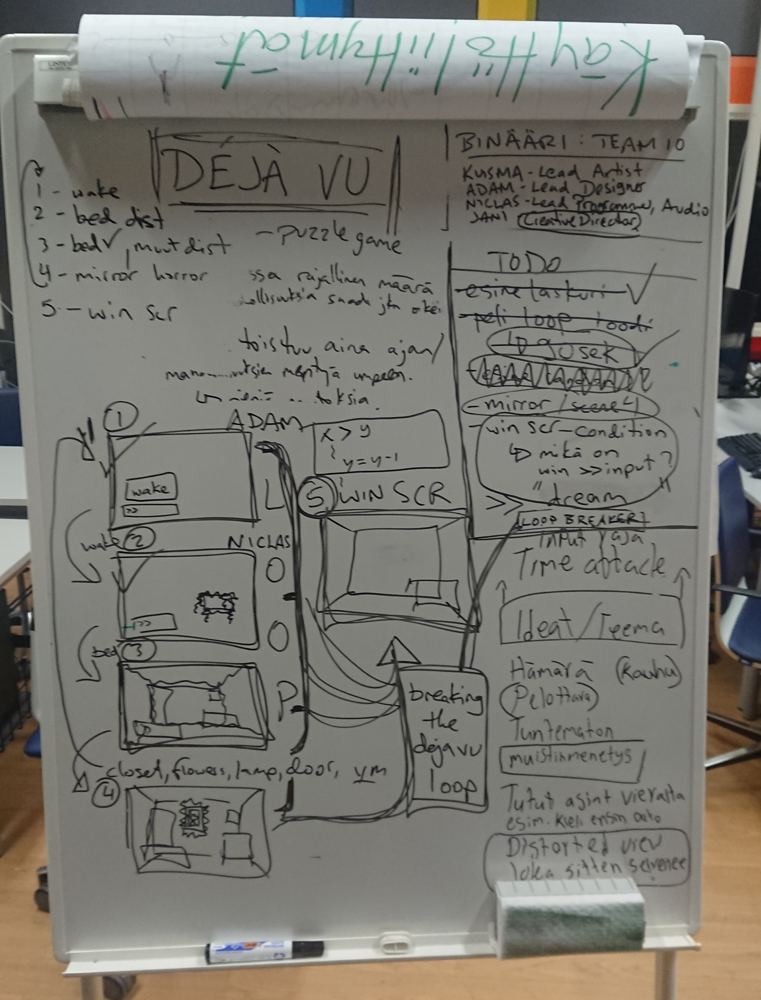
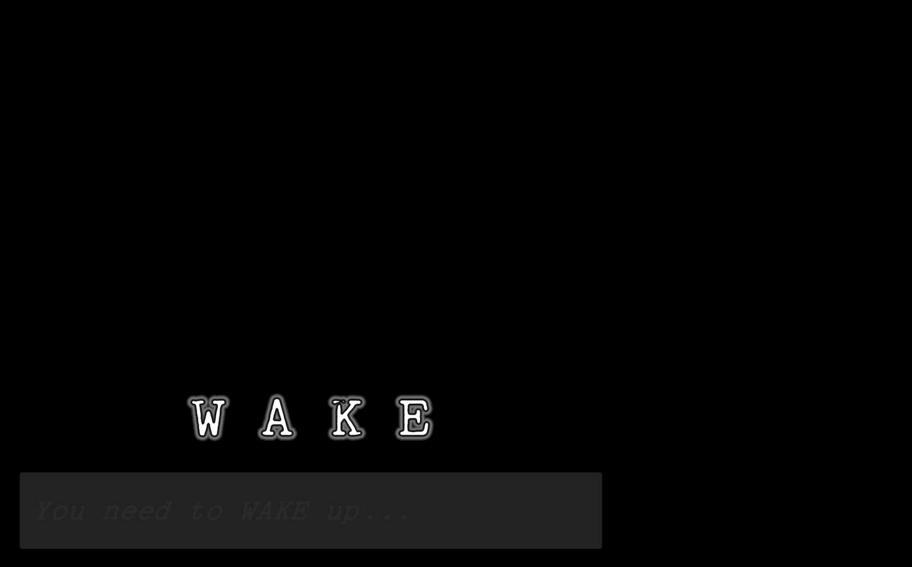

WAKE - A Déjà Vu experience
Production Team
Adam - Lead Designer
Jani - Creative Director
Kuisma - Lead Artist
Niclas - Lead Programmer & Audio Engineer
Status: Finished /Autumn 2022
Total work hours: 14
Tools: Unity, Visual Studio
Project Description
I attended a second 48-hour weekend game jam project in quick succession in October of my first year of studies, being barely wiser on many subjects. Our team had a great idea for a game given the theme déjà vu, which involved making a text adventure with a slightly unsettling atmosphere, even veering towards the horror genre.
We planned a game in which the player would wake up in a distorted dimmed room with eerie music playing in the background. The only UI would be a text input field and the player would have to solve the puzzles and enter the correct text inputs given the hints on screen. This would allow the player to “remember” where they are and gradually uncover the mystery. Unbeknownst to the player, a timer would reset the game ever so often, making the déjà vu aspect the real mystery. SPOILER ALERT! Only by falling back to sleep would they escape the game. Our evening of planning had come to an end, and we decided to pick up on work the following day.
Trailer video by Niclas
Tasks
My job on the team was firstly to get version control working properly, more on that later. I was only able to offer a limited amount of time to this project, so I took on the self-ironic title of creative director being on top of time management and throwing out ideas, helping where needed and spending most of my time watching tutorial videos. I made the UI text input field, coded it as well as coded the countdown timer and eventually published the game on itchio. I also helped in tweaking some of the code but that constituted a minor part of my role.
Solving Problems
A lot of problems arose from setting up version control. I thought I had an idea of how Github worked from my previous project, but this project made me familiar with the terms “merge conflict” and “force push”, so yeah, it was time consuming and frustrating at best. Eventually we resolved most issues with the scenes in Unity without losing too much of our work. Speaking of Unity, it was literally the second time I had used/opened the game engine, so that says a lot. The concept was great, the execution was eventually compromised by inexperience and lack of skill and time on my part, but I had a great time, nonetheless and it was a pleasure working with and getting to know the members of my awesome team.
Project Reel

Getting ideas out

Start Screen

Gameplay screenshot